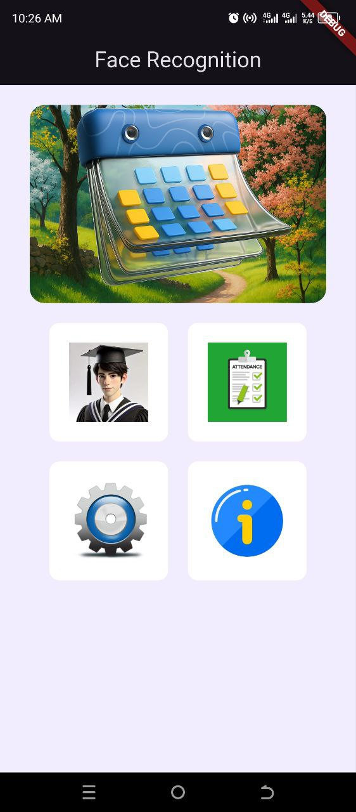
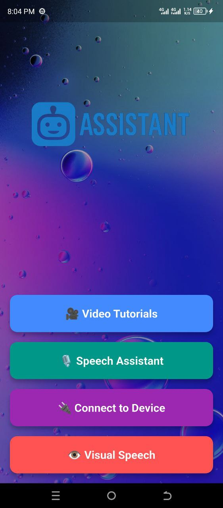

Junior Dasturiy Ta'minot Muhandisi | Mobil & Veb Dasturchi | Robototexnika Ishqibozi
Men Sambhram Universiteti (Jizzax) bitiruvchisiman, kompyuter injiniringi sohasida IT texnologiyalari, dasturlash va robototexnika bo‘yicha mustahkam bilimlarga egaman. Ingliz tili bo‘yicha B2 sertifikatiga egaman va Udemy platformasida Python Masterclass kursini tamomlaganman. Meni haqiqiy hayot muammolarini yechadigan mobil va veb ilovalarni yaratish qiziqtiradi.
O‘quv muassasalarda real vaqt rejimida yuzni aniqlash orqali davomatni yuritadigan mobil dastur. U yuzning haqiqiy yoki qalbaki ekanligini ham tekshiradi.
 🔗 GitHub sahifasiEshitishda muammosi bor insonlarga muloqot qilish va nutqini yaxshilashda yordam beradigan mobil ilova.
 🔗 GitHub sahifasiEmail: murodqosimovabdurauf2000@gmail.com
Telefon: +998 33 456 20 00
GitHub: github.com/MurodqosimovAbdurauf
LinkedIn: linkedin.com/in/abdurauf-murodqosimov